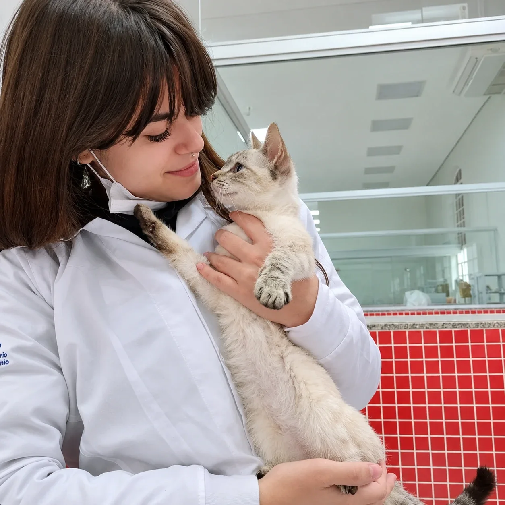
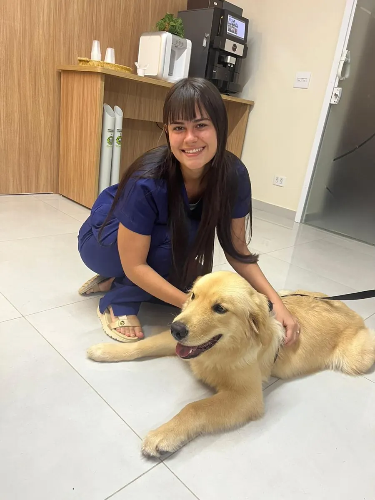
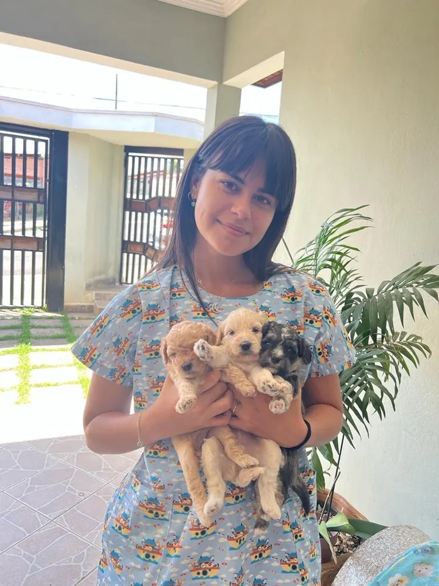
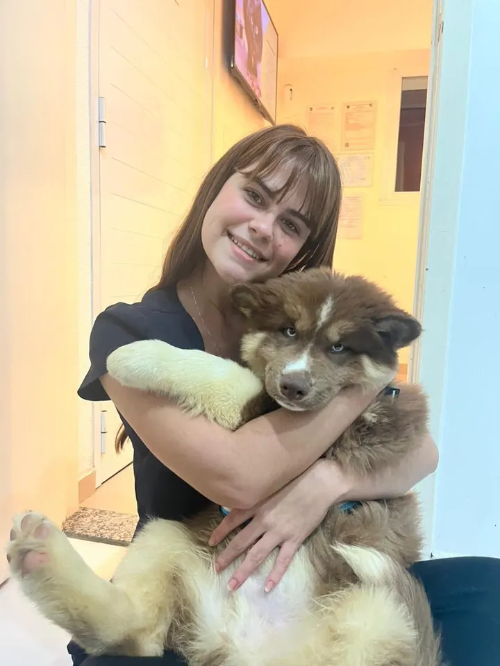
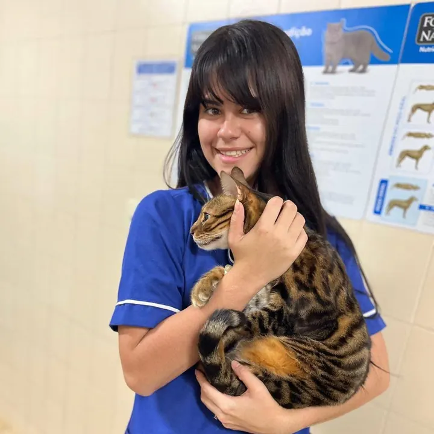
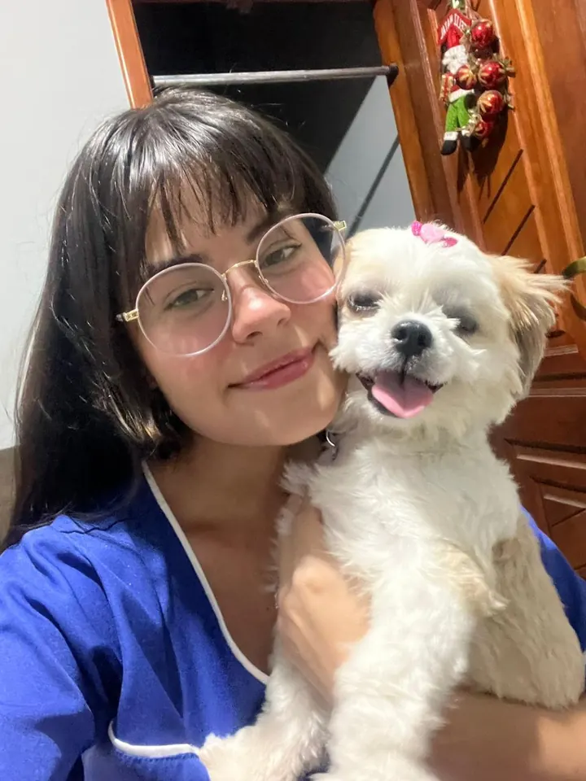
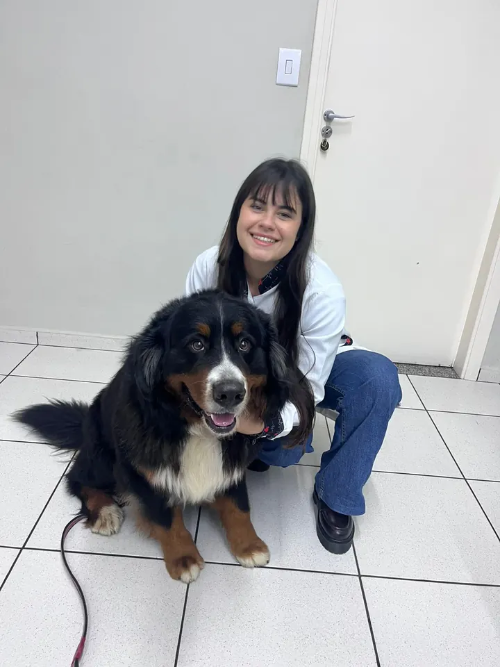
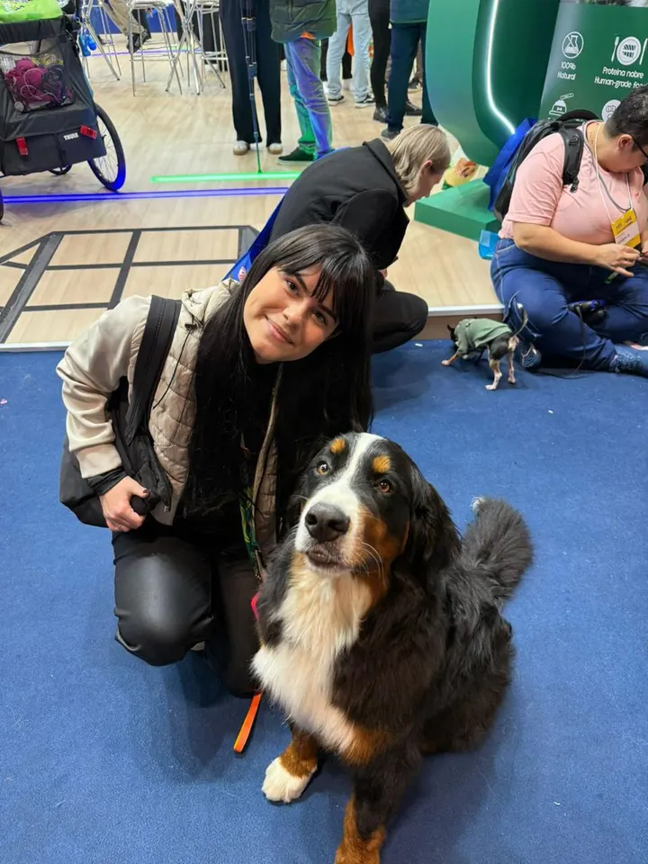

Consulta clínica
Exame físico completo e orientação para o caso, com prevenção de parasitas, alimentação e cuidados de cada fase da vida.
(15) 99689-3103 · seg a sáb, com hora marcada

Juliana Cubas
Consulta, vacina, coleta de exames e acompanhamento para cães e gatos, sem caixa de transporte e sem sala de espera. Seu pet é examinado onde se sente seguro.

Quem cuida do seu pet
Escolhi o atendimento domiciliar porque vejo o que ele muda: o animal fica mais calmo, o tutor conta com calma tudo o que percebeu em casa, e eu examino com tempo, sem fila e sem outro paciente latindo na sala ao lado.
Se algum caso pedir estrutura hospitalar, eu falo com a mesma transparência e oriento o encaminhamento certo. Não prometo o que o atendimento em casa não resolve.
Serviços
Toda visita começa ouvindo você: sintomas, rotina e histórico do pet. Depois vem o exame clínico, com o material todo na maleta.
Exame físico completo e orientação para o caso, com prevenção de parasitas, alimentação e cuidados de cada fase da vida.
Calendário em dia e aplicado com cuidado. Eu acompanho o histórico e aviso quando chega a hora do reforço.
Sangue e outras amostras coletados em casa e enviados ao laboratório, sem levar o pet a lugar nenhum.
Injetáveis e tratamentos contínuos, com orientação clara de dose e horário para seguir em casa.
Limpeza e troca de curativos com delicadeza, no tempo do animal, sem o estresse do deslocamento.
Retornos e monitoramento de tratamentos em andamento, com ajustes quando o pet precisar.
Serviço extra: pet sitter. Vai viajar ou passar o dia fora? Pergunte pelo WhatsApp sobre visitas para cuidar do seu pet.
Perguntar no WhatsAppSem caixa de transporte, sem sala de espera, sem cheiro de clínica. Só o seu pet, calmo, no lugar que ele conhece.
Juliana Cubas
Como funciona
Sem encaixe forçado: a gente combina o horário que cabe na sua rotina.
Conta o que está acontecendo, a espécie, a idade do pet e o bairro onde mora.
Eu respondo com os horários livres e o que vou precisar avaliar.
Levo o material para exame, coleta ou aplicação. Você acompanha tudo de perto.
Explico o que encontrei, o que fazer a partir dali, e sigo disponível para dúvidas.
Atendimento com hora marcada, de segunda a sábado.
Bastidores
Filhotes na primeira vacina, idosos em tratamento, gatos desconfiados. Um pouco do dia a dia.






Avaliações
Mensagens de quem já recebeu a visita, do jeito que chegaram.
A Luna está ótima!!! As orelhas estão ótimas também ❤️ ela já está deixando eu beijar... (antes quando eu tentava ela chorava de dor) obrigada ❤️
Juliana, muito obrigada por toda atenção, por tudo mesmo... Minha família gostou muito de você ❤️
Marquei a vacinação dos dois gatos pelo WhatsApp, ela veio no horário combinado e foi rápido, sem estresse pra eles nem pra mim. Recomendo de olhos fechados.
Dúvidas
O que os tutores mais perguntam antes da primeira visita. Ficou alguma dúvida? Me manda mensagem.
Perguntar no WhatsAppNa maioria das consultas, exames de rotina, vacinas e acompanhamentos, sim. Quando o caso pede estrutura hospitalar (cirurgia, internação, exames de imagem), eu oriento o encaminhamento certo, com transparência.
Cães e gatos, de filhotes a idosos. Me conta a espécie e a idade na conversa pelo WhatsApp para eu já chegar preparada.
Faz na avaliação. São as áreas que estudam dor, sedação segura e o paciente em estado delicado, o que ajuda a perceber cedo quando um quadro precisa de mais estrutura e a encaminhar na hora certa.
Só um espaço tranquilo e iluminado. Se for coleta de exame, eu passo antes a orientação de jejum. Os detalhes a gente combina na confirmação do horário.
Tietê e região. Me diz o seu bairro ou cidade no WhatsApp que eu confirmo o atendimento e o horário.
Agende a visita
Em três passos você escolhe o atendimento e o horário. Depois é só confirmar comigo pelo WhatsApp.
Horário pré-reservado
Falta só um passo: envie a ficha no WhatsApp para eu confirmar a visita.
Confirmar no WhatsAppPrefere conversar direto?
(15) 99689-3103